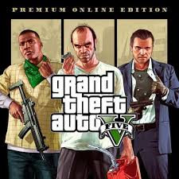
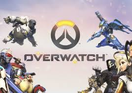
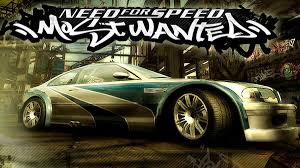
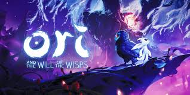
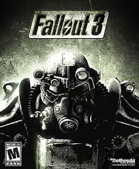

Grand Theft Auto V (сокр. GTA V) — мультиплатформенная компьютерная игра в жанре action-adventure с открытым миром, разработанная компанией Rockstar North и изданная компанией Rockstar Games. Изначально игра была выпущена для игровых консолей PlayStation 3 и Xbox 360 в 2013 году, в 2014 году переиздана для PlayStation 4 и Xbox One, а в 2015 году — для персональных компьютеров под управлением Windows. Является пятнадцатой по счёту игрой серии Grand Theft Auto и следующей крупной игрой после Grand Theft Auto IV, выпущенной в 2008 году. В России и СНГ издателем Grand Theft Auto V выступает компания 1С-СофтКлаб. Действие игры происходит в вымышленном штате Сан-Андреас, прообразом которого послужила Южная Калифорния. Сюжет в однопользовательском режиме строится вокруг приключений троих грабителей, устраивающих всё более дерзкие ограбления и противостоящих как организованной преступности, так и правоохранительным ведомствам. В процессе игры игрок управляет выбранным персонажем в режиме от первого или от третьего лица; персонаж может свободно передвигаться по обширному миру игры как пешком, так и на автомобилях и других видах транспорта. Особенностью Grand Theft Auto V по сравнению с другими играми серии является возможность переключаться между персонажами в любой момент, как во время выполнения заданий, так и вне их. Многие задания игры связаны с ограблениями и угоном автомобилей; при этом игровой персонаж может участвовать в перестрелках и погонях. Grand Theft Auto Online представляет собой встроенный многопользовательский онлайн-режим, поддерживающий до 30 игроков одновременно — для них предлагаются как кооперативные, так и соревновательные задания. Разработчики из Rockstar Games заявили, что на момент выхода GTA V является их самым большим и амбициозным проектом с крупнейшим созданным ими открытым игровым миром. GTA V является не только самой дорогостоящей по затратам на разработку и маркетинг игрой в истории, но и одной из самых популярных — на 2021 год её совокупные продажи на всех платформах превышают (англ.)русск. 135 миллионов копий, уступая лишь продажам Minecraft. В ходе пресс-конференции PlayStation 5 Rockstar Games анонсировала выход игры на платформах PlayStation 5 и Xbox Series X.
Overwatch — многопользовательская компьютерная игра в жанре шутера от первого лица, разработанная и выпущенная компанией Blizzard Entertainment в 2016 году для Windows, PlayStation 4 и Xbox One и в 2019 году для Nintendo Switch. В Overwatch две команды игроков по шесть человек ведут сражение на сложно устроенной карте; перед каждым сражением игроки выбирают себе персонажей-героев — различные герои обладают разными характеристиками и навыками, делающими их более подходящими для той или иной роли в сражении; способности различных персонажей дополняют друг друга, и игроки должны работать в слаженной команде, чтобы добиться победы. В каждом матче Overwatch игроки должны выполнить определённые задания, зависящие от выбранной карты и нередко ограниченные по времени, — например, захватить и удерживать контрольные точки на поле боя, сопроводить движущийся объект до определённого места или, наоборот, не дать ему добраться до цели. По мере развития игры в ней появлялись новые режимы, как, например, соревновательный рейтинговый режим или аркадные сражения (правила которых может устанавливать сам игрок); разработчики добавляли в игру новых персонажей и поля боя. Overwatch использует лутбоксы-«контейнеры» как дополнительное средство монетизации — игроки могут таким образом получать не влияющие на геймплей предметы наподобие альтернативного внешнего вида или новых анимаций для персонажей. Overwatch была первой игрой Blizzard за многие годы, не относящейся к одной из трёх основных франшиз компании — Warcraft, StarCraft и Diablo. Её разработка началась после отмены массовой многопользовательской онлайн-игры Titan; некоторые наработки Titan вошли в Overwatch. Новая концепция игры была создана по следам успеха командных шутеров наподобие Team Fortress 2 и растущей популярности жанра MOBA. Действие Overwatch происходит на Земле недалёкого будущего после мирового кризиса, вызванного восстанием роботов; среди героев игры есть выходцы из разных стран. Разработчики уделяли особое внимание балансу персонажей, следя за тем, чтобы как новички, так и опытные игроки могли получать от игры удовольствие. Игра была представлена публике на фестивале BlizzCon 2014 и до весны 2016 года находилась в режиме закрытого бета-тестирования; открытое бета-тестирование в мае 2016 года привлекло почти 10 млн игроков. Overwatch приобрела огромный успех: согласно отчётам Blizzard, за первый год после выхода компания получила от игры доход свыше миллиарда долларов США, и за два года количество игроков превысило 40 млн. Игра получила высочайшие оценки критиков — обозреватели отмечали низкий порог вхождения, разнообразие персонажей, яркую мультяшную графику и приятный игровой процесс. Overwatch была удостоена множества наград. Она также стала активной киберспортивной дисциплиной с международными соревнованиями; Blizzard поддерживает ассоциацию Overwatch League (англ.)русск., созданную по образу и подобию североамериканских спортивных лиг.
Need for Speed: Most Wanted (рус. Жажда скорости: Самый разыскиваемый; сокр. NFSMW) — компьютерная игра серии Need for Speed в жанре аркадной автогонки, разработанная студией EA Canada и изданная компанией Electronic Arts для консолей, персональных компьютеров и мобильных телефонов в 2005 году. Выход игры был приурочен к началу продаж новой консоли Xbox 360, диск с игрой поставлялся в комплекте с приставкой. В России Most Wanted издавалась компанией «Софт Клаб», первоначально с русской документацией, а с 2006 года — полностью на русском языке. Версия игры для PlayStation Portable была выпущена под названием Need for Speed: Most Wanted 5-1-0. Действия игры происходят в вымышленном городе Рокпорт, в котором игроку предоставлена свобода передвижения. По сюжету главный герой выигрывает гонки и продвигается вверх по «Чёрному списку» гонщиков, чтобы вернуть свой автомобиль BMW M3 GTR, отвоёванный Рэйзором обманным путём. Need for Speed: Most Wanted сочетает в себе уличные гонки, а также тюнинг автомобилей с оптимизацией настроек и полномасштабные полицейские преследования. Для продвижения по сюжету игрок должен выигрывать гонки «Чёрного списка» и уходить от полицейских преследований, за что зарабатывает очки, тем самым набирая рейтинг среди других гонщиков «Чёрного списка». Разработка Need for Speed: Most Wanted началась в 2004 году после выхода Need for Speed: Underground 2. Разработчики решили в новой игре реализовать полицейские погони и дорогие автомобили, тем самым вернуть серию «к корням», чтобы привлечь широкую игровую аудиторию. Игра была анонсирована на Е3 2005. Need for Speed: Most Wanted получила положительные отзывы от игровой прессы. Обозреватели хвалили интересный игровой процесс, графику и звуковые эффекты, но критике подвергали интеллект соперников. Need for Speed: Most Wanted стала коммерчески успешным проектом — в 2009 году было продано более 16 миллионов экземпляров игры по всему миру.
Ori and the Will of the Wisps (с англ. — «Ори и Блуждающие огоньки») — компьютерная игра в жанре платформера, разработанная студией Moon Studios для персональных компьютеров под управлением Windows и игровой приставки Xbox One. Является продолжением игры 2015 года Ori and the Blind Forest. О разработке игры было объявлено на выставке Electronic Entertainment Expo 2017. Выход игры для платформ Xbox One и Windows состоялся 11 марта 2020 года. Выпуск для Nintendo Switch состоялся 17 сентября 2020 года. Выпуск игры для Xbox Series X состоялся 10 ноября 2020 года, одновременно с запуском консоли.История игры завязана на новом приключении духа Ори за пределами леса Нибель, в лесе Нивен, в котором откроется правда о «потерянных», а также об истинном предназначении Ори. Действия игры происходят в мире за пределами леса Нибель, который населяют различные существа, как мирные, так и враждебные. В Нивене также есть разные существа (как и добрые так и плохие). Когда-то в Нибеле на рассвете родился совёнок по имени Ку, дочка Куро у которой, к сожалению, пораненное крыло, и малышка не может летать. Ори решает поместить в пораненное крыло перо матери, с которым Ку смогла полететь вместе со своим лучшим другом духом Ори. Они вылетают за пределы Нибеля и попадают в шторм, и друзья падают в разные части леса Нивен. "И так начинается история... Разделённых бурей": это слова которые возникают в конце пролога.
Fallout 3 — компьютерная игра в жанре Action/RPG с открытым миром, третья игра в серии Fallout. Была разработана компанией Bethesda Game Studios и издана Bethesda Softworks и ZeniMax Media. Fallout 3 вышла для игровых приставок Xbox 360 и PlayStation 3, а также для персональных компьютеров под управлением Microsoft Windows. Выход игры состоялся 28 октября 2008 года в США, 30 октября в Европе и Австралии и 4 декабря в Японии. Локализация игры в России осуществлена компанией 1С. В течение 2009 года были выпущены пять дополнений к игре, на русском языке изданы компанией 1С. Действие Fallout 3 происходит в том же постапокалиптическом мире, что и в других частях серии Fallout, в 2277 году — спустя 200 лет после ядерной войны 2077 года. Как и в предыдущих играх серии, в Fallout 3 фигурирует сеть подземных убежищ, построенная корпорацией Vault-Tec, как заявлялось, для спасения некоторой части населения Америки от последствий войны. Главный герой игры, Одинокий странник, провел детство в изолированном от окружающего мира убежище № 101 близ Вашингтона, столицы США. Когда его отец неожиданно покидает убежище, Одинокий странник отправляется на его поиски. Разрушенный ядерной войной Вашингтон и его окрестности представляют собой открытый мир, по которому игровой персонаж может путешествовать свободно, самостоятельно находя новые интересные места и задания. В отличие от предыдущих игр серии, Fallout 3 даёт игроку возможность управлять персонажем с видом от первого лица в реальном времени, и игра содержит элементы шутера; особая «система V.A.T.S.» позволяет приостанавливать бой, чтобы выбрать для атаки конкретного противника и конкретную часть тела. По мере получения очков опыта игрок может повысить характеристики персонажа и открыть для него новые способности, тем самым облегчая для себя исследование мира. После релиза Fallout 3 получила исключительно положительные отзывы критиков и ряд наград «Игра года» от различных изданий, и в последующие годы Fallout 3 включали в списки лучших игр в истории. Особых похвал критиков удостоились открытый мир игры и гибкая система развития персонажа; при этом обозреватели указывали на технические ошибки, особенно болезненные в версиях для игровых консолей[⇨]. Игра пользовалась огромным коммерческим успехом; лишь в первый месяц после выхода было продано 610 тысяч копий игры, и к 2015 году совокупные продажи Fallout 3 на всех платформах превысили 12,4 миллиона копий. В некоторых странах, как Австралия, Индия и Япония, игра была подвергнута самоцензуре по различным причинам, будь то изображение в игре употребления наркотиков или ядерного оружия.
